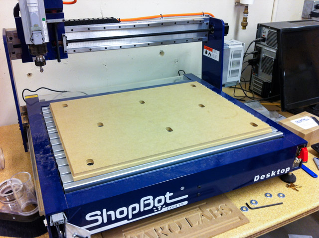
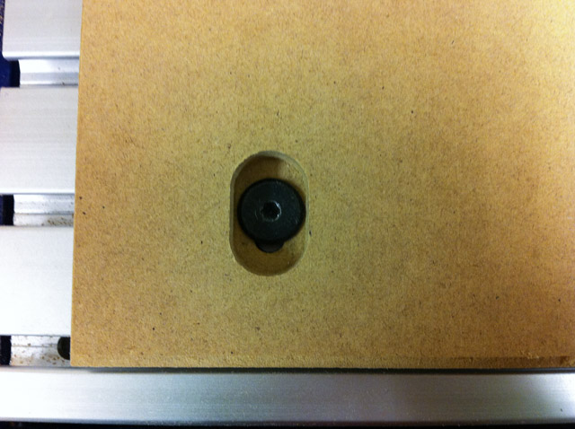
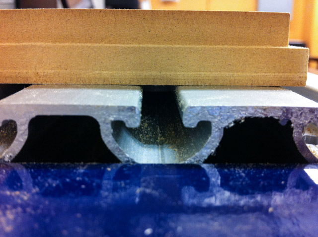
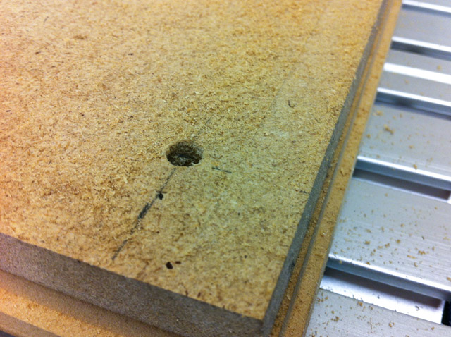
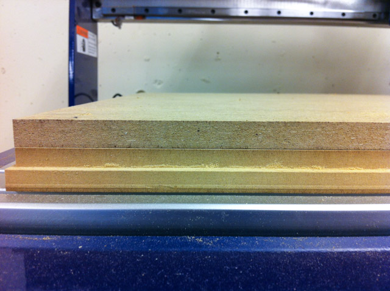
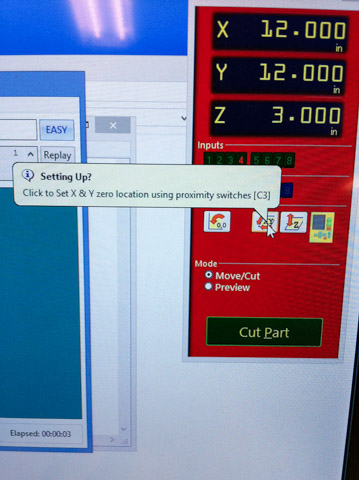
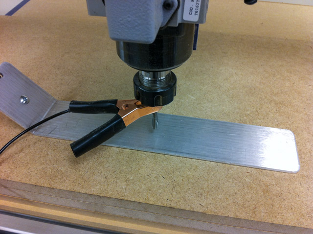
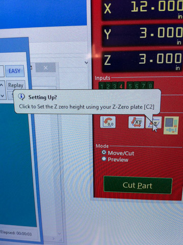
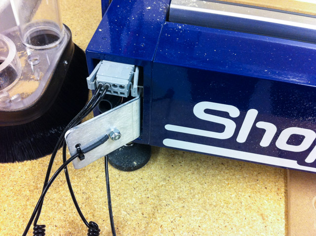

This is the ShopBot Desktop CNC machine. Here is the first spoilboard mounted, with a ribbet along the edge:
Top view of a mounting hole -- using the hardware from the kit:
Side view:
Here is the 2nd spoilboard added. 24x18 inches mdf sheet, 1/2" thick.
Hold-down screws are located at 1" in the corners, halfway between the corners, and one in the middle. (See pic above to see all the screws):
The screws are set into the material a bit:
Side view- it wasn't aligned perfectly, so there are a few mm of error in the x and y placement of the 2nd spoilboard:
The 2nd spoilboard is there for all of the cut throughs, or in case the spindle accidentally rams through the cutting surface.
It should be resurfaced if there are too many cuts.
Pic of resurfacing in progress:
Each new day, the X & Y zero should be calibrated using the proximity sensors:
Next up, the bits. Whenever changing a bit, make sure the spindle is off, and keylock is unplugged.
Use the tools so that you have to "close" your hand for both loading and unloading a bit:
Now for setting the 0 of the z-axis. Add the clamp to the bit and place the z levelling plate below the bit:
Press the button on the ShopBot control software to set Z zero with the plate:
Remember to place them back on the side of the ShopBot
